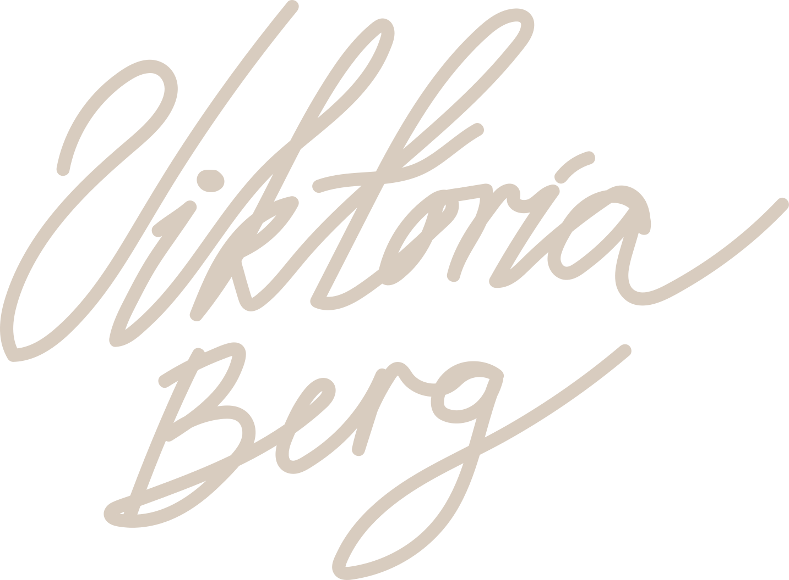
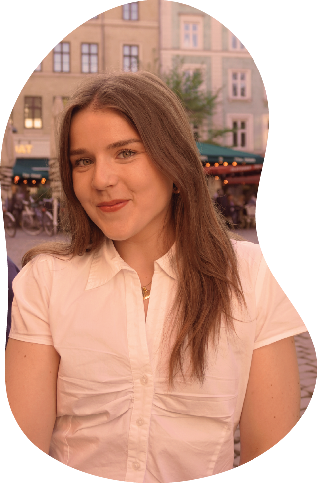

OM MIG

Navn: Viktoría Berg Einarsdóttir
Alder: 25 år
Interesser: Sport, rejser, håndværk og kreativitet
Tidligere erfaring
Læring fra semester
Gennem første semester har jeg arbejdet med HTML, CSS, Figma, brugerforståelse, prototyper og digitalt design. Jeg har fået erfaring med både kreative processer og udvikling af digitale løsninger.
Mine kompetencer
- HTML
- CSS
- Figma
- Adobe Illustrator
- GitHub